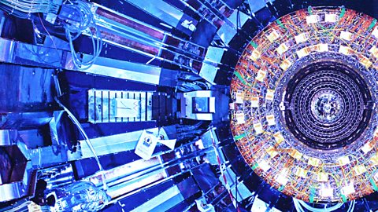

Molecules
Content
Contributor
An attribution.

John Simpson World affairs editor
Metadata
A set of data that gives information about other data.
See-Also
A stacked list of links providing onward journeys related to above content.
Units
Promo
A unit that promotes and drives onward journeys.
Featured 
Large Hadron Collider restarts after two-year rebuild
Particle beams have now travelled in both directions, inside parallel pipes, at a whisker below the speed of light.
John Simpson World affairs editor